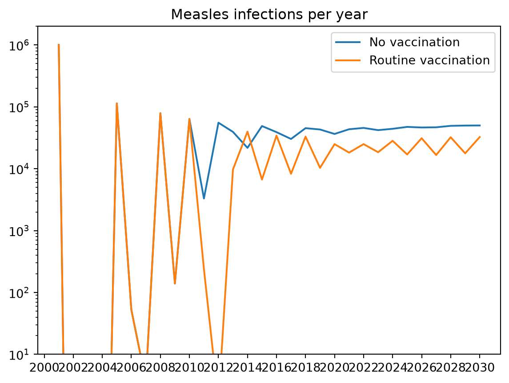

A program has to be paid for, and the question that decides between programs is often not only how much each prevents, but at what cost. Every product in Starsim takes a cost=, the cost of each delivery, and each delivery then records what it spent as a result, next to the number it delivered. With the results of a scenario without the program, that gives the cost of a program and the cost per outcome averted.
This page covers costing a program, comparing the costs and effects of several, costs with uncertainty, and costs that are not per delivery, such as discounting and fixed costs. Most sims have no costs, so core Starsim stops at the cost result of each delivery; the tools for adding costs up, discounting them, and comparing scenarios are in the Starsim library (import starsim.library as ssl), in ssl.econ: the analyzer ssl.Costs, the analyzer ssl.DALYs, the function ssl.discount(), and ssl.ICER. They are short, so they can be copied and changed for an evaluation that needs something else. What each product does is on Products, and how they are delivered on Interventions. To find the best way to spend a fixed budget across programs, see Optimization.
Costing a vaccination program
Here is measles in a population of a million people over 30 years, with births and deaths, so that measles stays endemic (see Demographics). From 2010, a routine program vaccinates 80% of infants, in yearly rounds that reach every child under one. The vaccine is all or nothing (leaky=False), protecting 95% of those vaccinated, and each dose costs $5, the cost of the vaccine and of giving it. The model is stratified by age, so that infants can be picked out, and runs as an ODE:
import numpy as npimport starsim as ssimport starsim.library as sslS, I, R = ss.states('S I R')infection = S >> I @1.9*I # β = 1.9 per dayrecovery = I >> R @ ss.days(8) # Infectious for 8 days on averagemeasles = ss.Disease(infection, recovery, init_prev=0.001)measles.stratify(age=[0, 1, 5, 15, 65])demographics = [ss.birth(rate=ss.peryear(0.03)), ss.death(rate=ss.peryear(0.01))]pars =dict(demographics=demographics, total_pop=1_000_000, start='2000', stop='2030', dt=ss.months(1), verbose=0)routine = ss.vaccinate(efficacy=0.95, leaky=False, coverage=0.8, where=ss.ppl.age <1, interval=ss.years(1), start='2010', cost=5.0)base = ss.Sim(measles, **pars)msim = ss.parallel({'No vaccination': base, 'Routine vaccination': base.new(interventions=routine)})import matplotlib.pyplot as pltfor sim in msim.sims: yearly = sim.results.measles.infection.resample('year') # Infections in each year plt.plot(yearly.timevec, yearly.values, label=sim.label)plt.yscale('log') # The first epidemic is far larger than the restplt.ylim(10, 2_000_000)plt.title('Measles infections per year')plt.legend();

Without vaccination, measles comes back every few years as births add susceptible children, and settles at an endemic level of tens of thousands of infections a year. With it, there are fewer infections, but measles persists: reaching 80% of infants with a vaccine that protects 95% of them protects 76% of each birth cohort, short of the 93% needed to stop a disease with an R0 of 15. The delivery’s results include cost, the amount spent on each step. Over a year, it is the cost of that year’s round, which grows with the number of infants as the population grows:
Doses given: 496527
Total cost ($): 2482633
Infections averted: 422934
Cost per infection averted ($): 5.87
Each infection averted costs about the price of a dose, since most children vaccinated would otherwise have been infected: with an R0 of 15, nearly everyone who is not immune gets measles. The same count works for any outcome a model has, such as deaths or cases needing treatment, if the model declares them (see Outcomes). The infections averted are only those within the run: a program that is still running at the end of the run keeps averting infections afterwards, so the horizon of a comparison matters as much as its costs.
Comparing programs
When there are several programs, the question is usually what each one adds over the next cheapest: its incremental cost per outcome averted (an incremental cost-effectiveness ratio, or ICER). Here the routine program is compared with the same program plus a campaign every four years that reaches 90% of children under five, at $8 a dose (a campaign costs more per child than routine delivery):
campaign = ss.vaccinate(efficacy=0.95, leaky=False, coverage=0.9, where=ss.ppl.age <5, interval=ss.years(4), start='2010', cost=8.0)costed = base.new(analyzers=ssl.Costs()) # Adds up the cost of every delivery, as the result costs.totalmsim = ss.parallel({'No vaccination': costed,'Routine': costed.new(interventions=routine),'Routine and campaigns': costed.new(interventions=[routine, campaign]),})icer = ssl.ICER(msim, outcome='measles.infection')icer.df.round()
cost
outcome
averted
incremental cost
incremental averted
ICER
dominated
extended
scenario
No vaccination
0.0
2084881.0
0.0
NaN
NaN
NaN
False
False
Routine
2482633.0
1661947.0
422934.0
2482633.0
422934.0
6.0
False
False
Routine and campaigns
7586914.0
1440997.0
643884.0
5104281.0
220950.0
23.0
False
False
The campaigns cost more than routine vaccination, and avert more infections, but each extra infection they avert costs more than with the routine program alone: the campaigns mostly reach children whom routine vaccination has already protected, or who would not have been infected anyway. Whether that is worth paying for is a judgment the model informs but does not make; it depends on what else the money could buy. ssl.Costs gives each sim a result for the cost of each delivery, and their total, costs.total. ssl.ICER totals the cost and the outcome named (any result: infections, deaths, or a model’s DALYs) for each scenario, takes the outcome averted from that of the baseline (the first scenario, unless baseline= names another), and orders the scenarios by cost. Each is compared with the next cheaper one, except that a program that costs more and averts no more than a cheaper one is dominated, and has no ratio. It works the same for any number of programs, for a dict or list of sims as well as a MultiSim, and with several runs of each scenario compares their means. A table that needs more than this, such as extended dominance or a different measure of effect, can be built the same way from the results.
With several runs of each scenario, icer.plot() shows each one on the cost-effectiveness plane, icer.plot_ceac() shows how often each scenario is the best at each willingness to pay, and icer.best(wtp=1000) gives the best scenario at one value.
Disability-adjusted life years
ssl.DALYs counts disability-adjusted life years as results: the time people spend in a state, multiplied by its disability weight, plus the years of life lost to deaths. ssl.ICER compares these by default, so the outcome doesn’t need naming:
With agents, the years of life lost come from each person’s age at death and a standard life table. Compartmental runs don’t record ages at death, so they take a number: ssl.DALYs(weights=..., life_lost=30).
Comparing during a run
ssl.ICER can also be an analyzer, after ssl.Costs and ssl.DALYs. The sim then counts as one more scenario, compared at each step with the finished sims it is given, over the same period, so that a sim can act on the result: for example, an intervention can follow sim.analyzers.icer.best(wtp=1000). window=1 compares the latest step alone.
Costs with uncertainty
A model run as agents, or as a stochastic model, gives different costs and effects in each run, so a cost per outcome averted needs several runs, and an interval. Give each scenario the same seeds (as n_runs= does), so that the runs can be paired, and the difference between scenarios is not lost in the differences between runs. Here a test-and-treat program for a curable infection with no lasting immunity, as on Products, costs $4 a test and $20 a treatment, and each scenario is run 8 times:
S, I = ss.states('S I')infection = S >> I @ ss.peryear(2)*I # β = 2 per yearrecovery = I >> S @ ss.years(1) # Infected for a year on average, then susceptible againsis = ss.Disease(infection, recovery, init_prev=0.1)screening = ss.screen(sensitivity=0.9, specificity=0.98, coverage=0.5, interval=ss.years(1), start='2010', cost=4.0)treatment = ss.treat(cure=0.95, who=screening.positive, coverage=0.8, cost=20.0)base = ss.Sim(sis, n_agents=5000, total_pop=100_000, start=2000, stop=2020, dt=ss.months(1), verbose=0)msim = ss.parallel({'No program': base, 'Test and treat': base.new(interventions=[screening, treatment])}, n_runs=8)res = msim.resultscost = res.screening.cost.values.sum(axis=1) + res.treatment.cost.values.sum(axis=1) # The cost of each run of the programaverted =-res.sis.infection.diff('No program')['Test and treat'].values.sum(axis=1) # The infections it averted, run by runratio = cost / avertedprint('Cost of the program ($), median:', round(np.median(cost)))print('Infections averted, median:', round(np.median(averted)))print('Cost per infection averted ($), median and range:', np.round(np.median(ratio), 1), np.round([ratio.min(), ratio.max()], 1))
Cost of the program ($), median: 4815920
Infections averted, median: 84740
Cost per infection averted ($), median and range: 56.7 [50.8 58.9]
The costs of each run are scaled to the population, as all results are: with 5,000 agents standing for 100,000 people, each test given to an agent counts as 20 tests. The cost varies little between runs, since it follows the number tested, but the infections averted vary more, so the ratio does too. Eight runs give a rough range; more give a better one, and Scenarios covers how many. The uncertainty here is only from chance: uncertainty in the parameters (the sensitivity of the test, the cost of each treatment) needs runs with values drawn from their priors as well (ss.parallel(sim, priors=True, n_runs=...); see Scenarios).
Discounting and other costs
Economic evaluations usually discount costs and outcomes in later years, at 3% a year for example, since a cost paid later, or an infection averted later, counts for less than one now. A result is an array over time, so discounting is a weight for each time point, (1 + rate)**-(t - start) for a time t in years after start. ssl.discount() applies it to a result, and gives back a result. Here the routine measles program from the first example, discounted at 3% a year from 2010:
Other costs work the same way, with the results that drive them. A cost that does not depend on deliveries, such as running a program (staff, cold chain, training), is an amount per year over the years the program runs. The cost of the disease itself, such as care for each case, is a cost per infection (or per case, if the model declares one), times the infections; the infections averted then save that cost, and the net cost of a program is its cost less the savings. ssl.Costs takes both: fixed=, a cost per year from start=, and unit_costs=, the cost of each event of any result, by its path. Here the program costs $20,000 a year to run from 2010, and each infection $50 of care, in both scenarios, so that the difference between them is the net cost:
care = {'measles.infection': 50} # $50 of care for each infectionmsim = ss.parallel({'No vaccination': ss.Sim(measles, analyzers=ssl.Costs(unit_costs=care), **pars),'Routine': ss.Sim(measles, interventions=routine, analyzers=ssl.Costs(unit_costs=care, fixed=20_000, start=2010), **pars),})df = ssl.ICER(msim, outcome='measles.infection', rate=0.03, start=2010).df # Discounted, as aboveprint(df[['cost', 'averted']].round())net = df.cost['Routine'] - df.cost['No vaccination']print('Net cost per infection averted ($):', round(net/df.averted['Routine'], 2))
cost averted
scenario
Routine 79604237.0 316968.0
No vaccination 93278380.0 0.0
Net cost per infection averted ($): -43.14
A net cost below zero means a program saves more than it costs; ssl.ICER then marks the scenario without it as dominated.
Optimizing spending
The examples above cost given programs. The reverse question, how best to divide a budget between programs, is an optimization: ss.fit.optimize() allocates a total between programs whose spending is a parameter of the model, to maximize or minimize a result, or finds the least total that reaches a target. The spending parameters, and how spending turns into coverage, come from the model: from a program book imported with the model (as from Atomica), or from parameters you write. See Optimization.
Under compartments and agents
Costs work the same under every solver. In a compartmental run, the number delivered on a step is a number of people, and the cost is that number times the cost of each delivery. As agents, the cost is counted per agent and scaled, like any count, by the number of people each agent stands for. A cost of a test is per test given (whatever its result), and a cost of a treatment per treatment given; a delivery that offers a product but doesn’t give it (to someone not eligible, or beyond its capacity) costs nothing.
Pitfalls
The cost is per delivery.cost= is the cost of each product given, including what it takes to give it; costs that don’t grow with the number delivered are added separately, as above.
Count every delivery. A program of several steps (a test, then treatment) has a cost for each; add them up.
Compare like with like. Take costs and outcomes from the same runs, over the same period, in the same units; with chance in the model, pair the runs of each scenario by seed.
The horizon matters. Infections averted after the end of the run are not counted, and a program that starts late in a run has had little time to avert any.